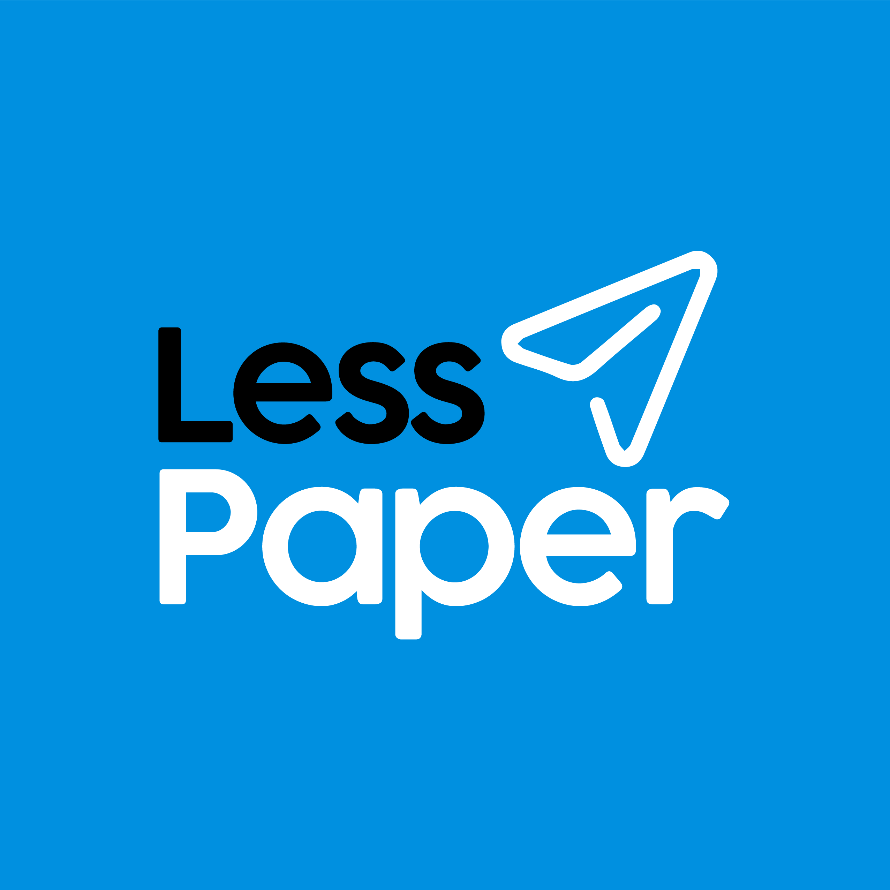
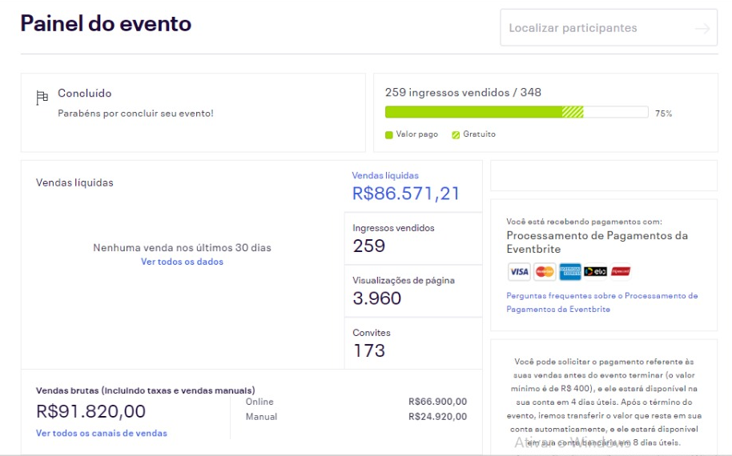
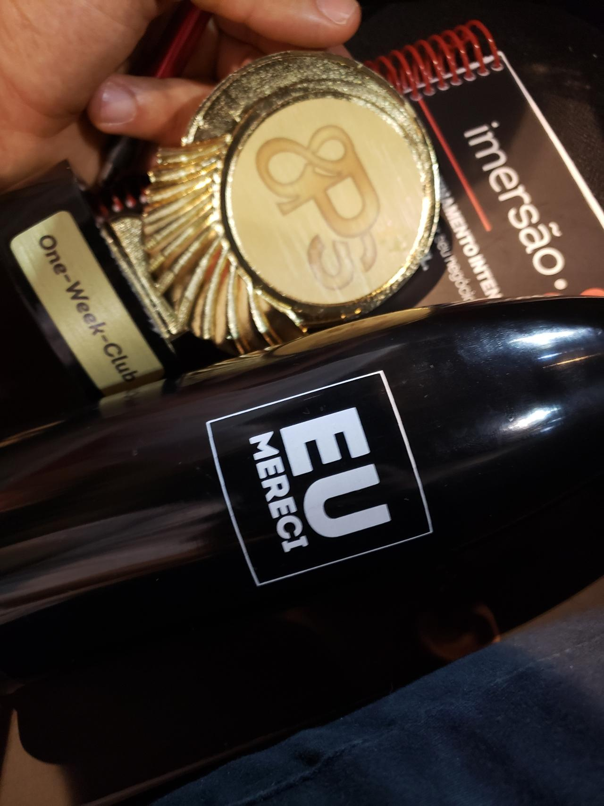
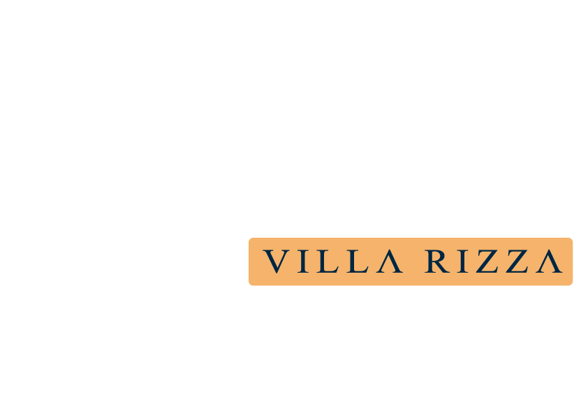
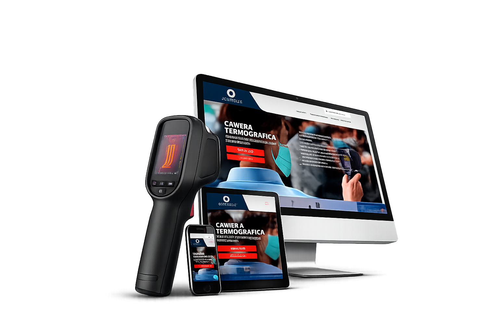
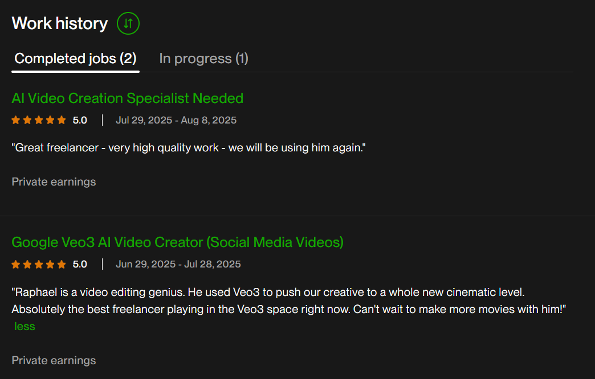
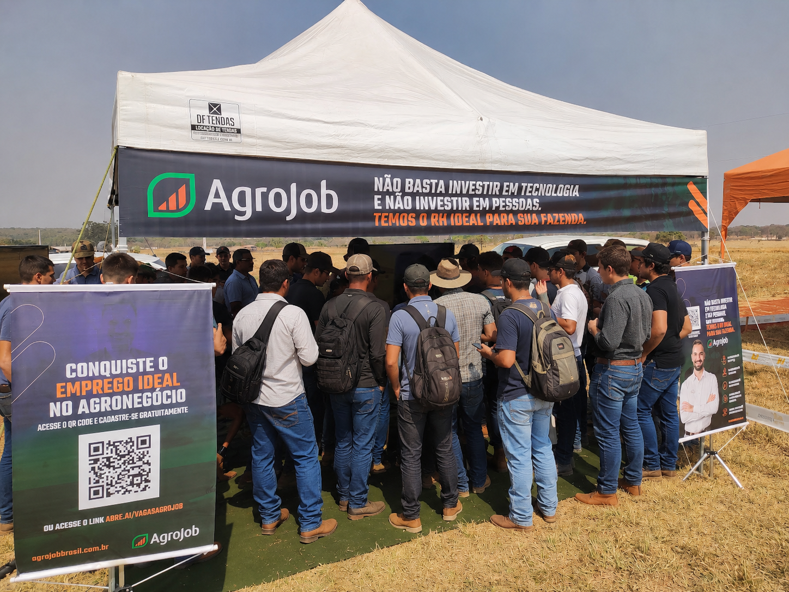

AI Systems
& Growth
Strategist.
Estrategista
de Sistemas
IA & Growth.
I help companies turn unclear growth problems into scalable marketing workflows using behavioral strategy, AI and rapid commercial execution. Ajudo empresas a transformar problemas de crescimento pouco claros em workflows de marketing escaláveis usando estratégia comportamental, IA e execução comercial rápida.
I build revenue-oriented workflows that connect brand clarity, customer behavior, AI-assisted production and commercial delivery into scalable results. Construo workflows orientados a receita que conectam clareza de marca, comportamento do cliente, produção assistida por IA e entrega comercial em resultados escaláveis.
From designer to
systems strategist.
De designer a
estrategista de sistemas.
Started in design. Evolved into solving commercial problems. For 17 years, I have worked across branding, behavioral marketing, AI-assisted production and digital operations — always closer to the business than to the brief. Comecei no design. Evoluí para resolver problemas comerciais. Por 17 anos, trabalhei em branding, marketing comportamental, produção assistida por IA e operações digitais — sempre mais próximo do negócio do que do briefing.
I learned early that clarity, speed and commercial awareness matter more than aesthetic perfection. That shift changed how I work. Aprendi cedo que clareza, velocidade e consciência comercial importam mais do que perfeição estética. Essa mudança transformou minha forma de trabalhar.

Less Paper
Built and operated a distributed creative agency before remote workflows became mainstream. Construí e operei uma agência criativa distribuída antes de fluxos remotos se tornarem padrão.
Scaled a distributed creative operation from zero to nearly R$600K in revenue within four years.Escalei uma operação criativa distribuída do zero a quase R$600 mil em receita em quatro anos.
Managed simultaneous client operations using remote systems before distributed workflows became mainstream.Gerenciei operações simultâneas de clientes usando sistemas remotos antes de fluxos distribuídos se tornarem padrão.
Built operational structure, communication systems and scalable production workflows from scratch.Construí estrutura operacional, sistemas de comunicação e fluxos de produção escaláveis do zero.
During the pandemic, while many businesses collapsed, the agency kept running — fully remote, fully operational.Durante a pandemia, enquanto muitos negócios colapsaram, a agência continuou — 100% remota, 100% operacional.
Operational Focus
Distributed creative operationsOperações criativas distribuídas Remote collaboration systemsSistemas de colaboração remota Campaign execution workflowsFluxos de trabalho de execução de campanhas Multi-client production managementGerenciamento de produção multi-clientes
Extreme ROI in 1 WeekROI Extremo em 1 Semana
Generated approximately R$190K in ticket sales with less than R$1K in paid media.Gerou aproximadamente R$190 mil em vendas de ingressos com menos de R$1 mil em mídia paga.
Designed high-pressure behavioral campaigns focused on rapid ticket conversion using urgency mechanics and strategic positioning.Desenhei campanhas comportamentais de alta pressão focadas em conversão rápida usando mecânicas de urgência e posicionamento estratégico.
This execution won a national marketing award in Brasília — proof that systemic thinking consistently outperforms raw budget.Essa execução ganhou um prêmio nacional de marketing em Brasília — prova de que pensamento sistêmico consistentemente supera orçamentos elevados.



R$190K in ticket sales. Less than R$1K in media spend. National 8Ps Award winner. R$190 mil em ingressos. Menos de R$1 mil em mídia. Vencedor do Prêmio Nacional 8Ps.

Domatus: Adapting to SurviveDomatus: Adaptação para Sobreviver
Helped generate more than R$1.9M during the pandemic through rapid positioning and thermal camera campaigns targeting public agencies, courts and supermarkets.Ajudei a gerar mais de R$1,9 milhão durante a pandemia com posicionamento rápido e campanhas de câmeras térmicas para órgãos públicos, tribunais e supermercados.
Executed high-speed adaptation during a market collapse scenario — rebuilt the entire strategy in days, not months.Executei adaptação em alta velocidade durante um cenário de colapso de mercado — recriei toda a estratégia em dias, não meses.
Combined operational execution, positioning and commercial communication under extreme uncertainty.Combinei execução operacional, posicionamento e comunicação comercial sob incerteza extrema.
I move fast without losing direction.Me movo rápido sem perder a direção.

Fiesta Motel
Identified occupancy inefficiencies and built promotional systems to increase reservation flow during low-demand periods.Identifiquei ineficiências de ocupação e construí sistemas promocionais para aumentar o fluxo de reservas durante períodos de baixa demanda.
Identified hidden revenue opportunities through occupancy behavior analysis — not generic advertising assumptions.Identifiquei oportunidades de receita ocultas através de análise do comportamento de ocupação — não por supressões de publicidade genérica.
Created scalable promotional systems — including the "Double Time" campaign — later replicated by competitors, proving the commercial logic was ahead of market practice.Criei sistemas promocionais escaláveis — incluindo a campanha "Tempo em Dobro" — posteriormente replicados por concorrentes, provando que a lógica comercial estava à frente do mercado.
Built campaigns based on operational data. Contributed to reputation restructuring, Google review recovery, AI-assisted content pipelines, visual repositioning and a full website redesign.Construí campanhas baseadas em dados operacionais. Contribuí para reestruturação de reputação, recuperação de avaliações no Google, pipelines de conteúdo com IA, reposicionamento visual e reformulação do site.
Also helped create new suite concepts, including the Cinema Suite — which became one of the highest-demand experiences in the business.Também ajudei a criar novos conceitos de suítes, incluindo a Suíte Cinema — que se tornou uma das experiências de maior demanda no negócio.
Most people wait for clarity. I build it.A maioria espera clareza. Eu a construo.
AI Smart Studios

Building AI-native creative systems before the market understood their commercial potential.Construindo sistemas criativos nativos de IA antes do mercado entender seu potencial comercial.
Rapidly learned and implemented AI-assisted production pipelines while the ecosystem was still unstable.Aprendi e implementei rapidamente pipelines de produção assistidos por IA enquanto o ecossistema ainda era instável.
Integrated storytelling, automation, prompting, cinematic direction and scalable execution into a single operational model. Operated directly in the U.S. market via Upwork with international clients.Integrei storytelling, automação, prompting, direção cinematográfica e execução escalável em um único modelo operacional. Operei diretamente no mercado americano via Upwork com clientes internacionais.
Adapted faster than traditional creative structures — building and iterating before the tools were even stable.Adaptei mais rápido que estruturas criativas tradicionais — construindo e iterando antes mesmo das ferramentas estabilizarem.
The biggest lesson was operational: high-quality AI production requires heavy iteration and technology costs. The knowledge compound gained in this process was irreplaceable.A maior lição foi operacional: produção com IA em alta qualidade exige iteração pesada e custos de tecnologia. O conhecimento acumulado nesse processo foi insubstituível.

Execution creates leverage.Execução cria alavancagem.

Experiential marketing activationAtivação de marketing de experiência High-engagement live event strategyEstratégia de eventos ao vivo de alto engajamento Brand positioning from scratchPosicionamento de marca do zero Digital ecosystem developmentDesenvolvimento de ecossistema digital Lead generation systemsSistemas de geração de leads Recruitment communication workflowsFluxos de comunicação de recrutamento Operational logistics & backup systemsLogística operacional e sistemas de backup
Agrojob
Structured brand positioning and recruitment systems for a fragmented agricultural market.Estruturei posicionamento de marca e sistemas de recrutamento para um mercado agrícola fragmentado.
At Agrojob, the challenge wasn't only marketing. It was communication inside a traditionally closed and highly fragmented market.Na Agrojob, o desafio não era apenas marketing. Era comunicação dentro de um mercado tradicionalmente fechado e altamente fragmentado.
The business needed to speak with two completely different audiences: farm owners and rural workers. To solve this, I developed the company's branding, digital positioning, website structure, recruitment communication systems, paid campaigns and event strategies.O negócio precisava falar com dois públicos completamente diferentes: donos de fazendas e trabalhadores rurais. Para resolver isso, desenvolvi o branding da empresa, posicionamento digital, estrutura do site, sistemas de comunicação de recrutamento, campanhas pagas e estratégias de eventos.
One of the strongest cases came during an agricultural drone event.Um dos cases mais fortes aconteceu durante um evento de drones agrícolas.
Instead of simply displaying products, I designed an interactive drone simulation experience where visitors could attempt a drone challenge in exchange for branded rewards. The activation transformed the stand into one of the busiest attractions of the event, generating massive engagement and lead capture through experiential marketing.Em vez de simplesmente exibir produtos, desenhei uma experiência interativa de simulação de drones onde os visitantes podiam tentar um desafio em troca de brindes da marca. A ativação transformou o estande em uma das atrações mais movimentadas do evento, gerando engajamento massivo e captura de leads através de marketing de experiência.
I adapt fast because markets change fast.Me adapto rápido porque mercados mudam rápido.
I operate well in environments
where most people freeze.
Opero bem em ambientes
onde a maioria das pessoas trava.
I learn fast, adapt fast and execute under pressure.Aprendo rápido, adapto rápido e executo sob pressão.
My strength has never been following rigid structures.
It has always been creating momentum inside uncertainty.
Minha força nunca foi seguir estruturas rígidas.
Sempre foi criar momentum dentro da incerteza.
For 17 years, I have solved communication, positioning and growth problems by combining systems thinking, psychology, execution and rapid adaptation. Por 17 anos, resolvi problemas de comunicação, posicionamento e growth combinando pensamento sistêmico, psicologia, execução e adaptação rápida.
I don't wait for ideal conditions.
I build while operating.
Não espero condições ideais.
Construo enquanto opero.
Momentum solves problems.Momentum resolve problemas.
I don't see marketing as content.
I see it as systems, behavior and positioning.
Eu não vejo marketing como conteúdo.
Eu vejo como sistemas, comportamento e posicionamento.
The strongest businesses are usually built by people capable of connecting strategy, psychology, operations, storytelling and execution into one coherent system.
That intersection is where I operate.
Os negócios mais fortes geralmente são construídos por pessoas capazes de conectar estratégia, psicologia, operações, storytelling e execução em um sistema coerente.
Essa intersecção é onde eu opero.
Core CompetenciesCompetências Principais
For companies that need momentum, not more meetings. Para empresas que precisam de momentum, não mais reuniões.
Strategy means nothing without operational momentum. Estratégia não significa nada sem momentum operacional.